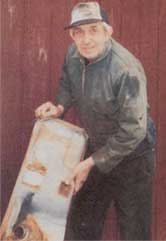
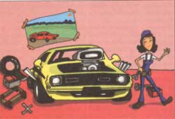

Thirty-five years of car know-how. . . under the hood.
No matter what the guys in the garage business tell you about spending years in less than ideal working conditions, and almost always being underpaid for the increasingly technical nature of what they perform for the public, some of us just love what we do for a living. Many years ago, l had to make the fateful decision between wearing a shirt and tie every day for the rest of my life and doing what I really loved. With every passing day I am more grateful for choosing the garage. Every day is different from the day before, and poses an entirely new set of challenges. I don't have a million bucks, but I've enjoyed (almost) every day of my career for nearly 30 years. Name ten tie wearers who can say the same.
My Ford Escort four cylinder with fuel injection plugged a fuel filter and even though I managed to replace it, the engine still wouldn't start. I eventually had a garage tow it in and the mechanics had it running in less than an hour. What did I miss and how did they fix it in such a hurry?
Ken Edelsman
Fort Wayne, IN
Dig out your owner's manual and you will find reference to a "Reset Button" somewhere, probably in the "engine maintenance" section. This "Reset Button" is very much like any circuit breaker in your house, and is intended to trip off the fuel pump if there is a problem with the system. Because your fuel pump will continue to pump fuel even to a plugged filter, it has to be protected from itself, and you need to be protected from a potentially dangerous situation. For some cars without this provision, it is often necessary to buy a new electric fuel pump (which costs a good 300 bucks) even if the original problem is nothing more complicated than a fuel filter plugged with dirt and water. You will find the reset under the plastic panel on the left when the deck lid is lifted. If yours is like most I've seen, you will likely need a screwdriver to remove the plastic guard before you can press the button with your finger.
By the way, replacing a fuel filter underneath a car can get you in over your head in a hurry, so don't try it without all the proper tools and jacks. Line wrenches are a must, and be sure there are no ignition sources anywhere around that might ignite the inevitable small spills that happen during the filter replacement process. I recommend a yearly replacement of these critical fuel filters, which might be more often than your maintenance schedule suggests. Do it anyway. Some "dry gas" added to a fresh tank each month will also help get the most from your system. It will keep water from building up in the fuel supply, and one can will neutralize about a teaspoon of water. As a kid I once saw a gent coast down a hill in his stalled car to a copse by the roadside, run in to get a jug of the local "dry gas" hidden inside a hollow old tree, pour it into his gas tank and take off down the road again with the car running fine. From what I heard, that was a common use of bad "moonshine." It gives me chills just to think about anyone drinking it.
As a present for her seventeenth birthday, 1 gave my daughter our '89 Chevy Caprice. She loves it, but 1 feel a bit nervous about her driving it far from home when she knows so little about engines and maintenance. How would you suggest giving her a crash course?
Peter Logan
Olympia, WA
Well, that's a good one! I married a farm girl who could drive the family tractors at 12 but still doesn't check the oil on our cars after being married to a technician for 35 years. So let's begin there. You can certainly show her how to check the engine oil level on the dipstick, which is best done in the morning when the engine hasn't been running all night. Next show her where the power steering oil reservoir is and how to check that, and then go to the transmission oil, stressing that the transmission is always checked with the engine running. Tell her how to recognize air filter, fan belt, and hose wear and to eyeball the engine for these problems every week. Change a tire with her twice, doing it first with her watching and then again with you watching. Make sure that she has both a breaker bar and a deep well socket in the trunk for such occasions, and show her how to stand on the breaker bar to break the lugnuts loose. The first time she comes home to brag about how she changed a tire on a girlfriend's car while they were away, you will know your own success. Make sure that you have the state registration and insurance card (in a zip lock bag) in the glove compartment along with the phone number of the local AAA agency,
your membership number, and finally the phone number of an approved AAA towing service. The last thing you want is her stranded in the middle of nowhere, cold-calling "Joe's $10,000 Per Axle Towing Service" if a hose is punctured or a belt breaks and falls off.
Auto parts stores have or can get packages for a few bucks that contain jumper cables, a reliable flashlight, a set of signs which include one that says "Help," "Call the Police" and several other necessary items for stranded motorists. But be sure you know how to use a set of jumper cables before you try to teach her. I would also recommend that she keep an extra set of all belts the car might need, (a dealership parts salesman will hook you up with the right set). We carry fire extinguishers, as well, in all our cars in my family. A ten pound fire extinguisher will fit nicely out of sight, and if it doesn't, next time buy a bigger car. There can be no frustration like that of standing by helplessly while a fire ignites in your car that you are helpless to address.
Now she's ready for the road.
A few weeks ago, 1 had a garage put new tierod ends on my Buick and no more than a week later, one fell off on one side, causing a minor accident. My insurance paid but I'm still disturbed by this. How can this happen?
Dolores Fenik
Augusta, GA
Actually millions of tons of fake replacement parts are shipped into this country every year by "junk makers" all over the world. Simply stated, junk makers do not have to meet international standards to export junk, and the parts have found their way into virtually every shop in the country. I acquired a handful of junk nuts and bolts myself at an auction, so even a relatively trained eye can get tricked. One of the worst problems we have in our business is junk sheet metal. We are habitually checking if the replacement parts were actually approved by the car maker, or if at least they were made in this country by a reputable company. We try to watch as we assemble your car on our racks but some unmarked nuts and bolts are going to get through. It is a continuing problem especially where the guy doing the work doesn't buy the nuts and bolts himself. But please don't make the technician into a scapegoat. Most state inspection agencies have already made him a permanent scapegoat without your help.
The problem ultimately lies at Congress's doorstep. Making manufacturing specifications a necessity and not just a suggestion will mean a lot less tierod ends falling off.
I found the spare in my 1988 Chevy flat when I needed it but when I took it in to be repaired, nobody would fix it for me. I tried three different tire shops and all refused, saying they were not allowed to fix them. Why?
Mike Nelitto
Trenton, NJ
Believe it or not, the shop's refusal to fix temporary "donut" tires is something you might ultimately be thankful for. Small spares are inherently dangerous and were only invented to increase trunk space. Better to replace the factory donut immediately with a normal sized rim and tire. It is not only infinitely preferable in the case of a flat, but can also be rotated into the mix and extend the life of your tire set.
If your car or truck is getting you down and you need some practical answers fast, write Jon at "MOTHERS Mechanic," c/o MOTHER EARTH NEWS, P.O. Box 129, Arden, NC or via E-mail at MEarthNews@aol.com . Don't forget to include your phone number and a photo.
|
 |
 |
|